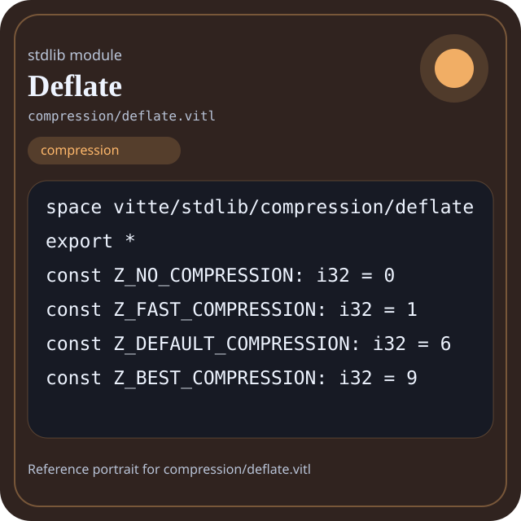

Stdlib module compression/deflate.vitl
This page is a wiki-style reference for one concrete stdlib file. It explains what the file owns, where it fits in the family, and how to decide whether this is the right surface to depend on.

compression/deflate.vitl.Family: compression
Kind: public stdlib surface
Page style: this reference follows the same “encyclopedic card + portrait + usage contract” logic as the keyword pages, but for stdlib modules.
Summary
- Overview
- Purpose
- Taxonomy
- Implementation profile
- Top-level API inventory
- Position in family
- Declaration map
- Representative signatures
- How to use this module
- User example
- Keyword coverage
- Source shape
- Source landmarks
- Source organization
- Complete API catalog
- Integration boundaries
- Composition guidance
- Relationship table
- Neighbor modules
Overview
| Field | Value |
|---|---|
| Path | compression/deflate.vitl |
| Family | compression |
| Kind | public stdlib surface |
| Line count | 115 |
| Declared procedures | 13 |
| Declared forms/picks | 4 |
`compression/deflate.vitl` is a public stdlib surface inside the `compression` family. It should be read as one focused slice of the broader family responsibility: Algorithms and interfaces for compacting data: huffman, lz, deflate, brotli, stats, and shared compression interfaces.
Purpose
This file should be chosen because of responsibility, not because its name “sounds close enough”. Inside the compression family, it carries one focused part of the contract and keeps that responsibility separate from neighboring concerns.
- A report archive can be built in memory, then compressed before emission.
- A transport layer can separate serialization from compression instead of mixing both in one procedure.
Taxonomy
Think of this page as a generated encyclopedia entry rather than a hand-written tutorial. The goal is to show what kind of module this is, how dense it is, and what reading strategy makes sense before depending on it.
- Medium procedure surface: this file groups several related operations behind one namespace.
- Owns domain vocabulary: the module declares data shapes in addition to executable helpers, so its types are part of the contract.
- Has tuning constants: part of the module behavior is controlled by named constants that document default precision, limits, or policy.
- Minimal top-level dependencies: the module reads as mostly self-contained from its opening declarations.
- Explicit export surface: the file ends with visible export declarations instead of relying only on implicit namespace discovery.
Implementation profile
This profile is inferred directly from the source text. It does not replace reading the file, but it tells you quickly whether the module is mostly declarative, loop-heavy, branch-heavy, or organized around many small exits.
| Signal | Count | What it suggests |
|---|---|---|
if | 0 | Branching density and local decision-making. |
while | 1 | Loop-heavy or iterative implementation style. |
for | 0 | Collection-style traversal at source level. |
match | 0 | Variant-driven branching or grammar-style decoding. |
let | 9 | Local state and intermediate value density. |
give | 13 | Number of explicit exit points and result shaping. |
Top-level API inventory
| Surface | Items |
|---|---|
| Procedures | _slice_text, deflate_version, deflate_ready, deflate_manifest, deflate_health, deflate_summary, compress_deflate, decompress_deflate, compress_zlib, decompress_zlib, compress_gzip, decompress_gzip |
| Forms | DeflateContext, DeflateManifest, DeflateHealth, DeflateSummary |
| Picks | none declared at top level |
| Constants | Z_NO_COMPRESSION, Z_FAST_COMPRESSION, Z_DEFAULT_COMPRESSION, Z_BEST_COMPRESSION, Z_DEFAULT_STRATEGY, Z_RLE |
| Exports | * |
Imported surfaces
This file does not advertise a top-level `use` surface in its opening declarations. That often means it is either self-contained or an aggregation layer.
Position in family
This file is module 4 of 9 in the compression family when ordered by path. By procedure count it ranks 7, and by line count it ranks 8. Those ranks are useful as rough signals of breadth, not as quality judgments.
Declaration map
The declaration map turns raw source into a scan-friendly catalog. It is useful when the file is large enough that a reader wants to orient by kinds of surfaces first.
| Line | Name | Kind | Role |
|---|---|---|---|
| 1 | vitte/stdlib/compression/deflate | space | Declares the namespace that anchors this file in the stdlib tree. |
| 5 | Z_NO_COMPRESSION | const | Defines a named constant reused across the module. |
| 6 | Z_FAST_COMPRESSION | const | Defines a named constant reused across the module. |
| 7 | Z_DEFAULT_COMPRESSION | const | Defines a named constant reused across the module. |
| 8 | Z_BEST_COMPRESSION | const | Defines a named constant reused across the module. |
| 10 | Z_DEFAULT_STRATEGY | const | Defines a named constant reused across the module. |
| 11 | Z_RLE | const | Defines a named constant reused across the module. |
| 13 | DeflateContext | form | Introduces a structured data shape that other procedures can exchange. |
| 18 | DeflateManifest | form | Introduces a structured data shape that other procedures can exchange. |
| 24 | DeflateHealth | form | Introduces a structured data shape that other procedures can exchange. |
| 32 | DeflateSummary | form | Introduces a structured data shape that other procedures can exchange. |
| 37 | _slice_text | proc | Represents one top-level surface in the file contract and should be read as part of the module boundary. |
| 49 | deflate_version | proc | Represents one top-level surface in the file contract and should be read as part of the module boundary. |
| 53 | deflate_ready | proc | Represents one top-level surface in the file contract and should be read as part of the module boundary. |
| 57 | deflate_manifest | proc | Represents one top-level surface in the file contract and should be read as part of the module boundary. |
| 65 | deflate_health | proc | Represents one top-level surface in the file contract and should be read as part of the module boundary. |
| 75 | deflate_summary | proc | Represents one top-level surface in the file contract and should be read as part of the module boundary. |
| 82 | compress_deflate | proc | Represents one top-level surface in the file contract and should be read as part of the module boundary. |
| 87 | decompress_deflate | proc | Represents one top-level surface in the file contract and should be read as part of the module boundary. |
| 91 | compress_zlib | proc | Represents one top-level surface in the file contract and should be read as part of the module boundary. |
| 96 | decompress_zlib | proc | Represents one top-level surface in the file contract and should be read as part of the module boundary. |
| 100 | compress_gzip | proc | Represents one top-level surface in the file contract and should be read as part of the module boundary. |
| 105 | decompress_gzip | proc | Represents one top-level surface in the file contract and should be read as part of the module boundary. |
| 109 | deflate_selftest | proc | Represents one top-level surface in the file contract and should be read as part of the module boundary. |
The table is exhaustive for top-level declarations of the selected kinds. This file declares 24 matching surfaces.
Representative signatures
These signatures are shown in source order so the page keeps the feel of a reference manual, not just a keyword cloud.
const Z_NO_COMPRESSION: i32 = 0(line 5)const Z_FAST_COMPRESSION: i32 = 1(line 6)const Z_DEFAULT_COMPRESSION: i32 = 6(line 7)const Z_BEST_COMPRESSION: i32 = 9(line 8)const Z_DEFAULT_STRATEGY: i32 = 0(line 10)const Z_RLE: i32 = 3(line 11)form DeflateContext {(line 13)form DeflateManifest {(line 18)form DeflateHealth {(line 24)form DeflateSummary {(line 32)proc _slice_text(text: string, start: i32, end: i32) -> string {(line 37)proc deflate_version() -> string {(line 49)proc deflate_ready() -> bool {(line 53)proc deflate_manifest() -> DeflateManifest {(line 57)proc deflate_health() -> DeflateHealth {(line 65)proc deflate_summary() -> DeflateSummary {(line 75)proc compress_deflate(data: [i32], level: i32) -> [i32] {(line 82)proc decompress_deflate(data: [i32]) -> [i32] {(line 87)
The list is intentionally capped here; the source file declares 23 matching signatures in total.
How to use this module
Start by reading the file as an ownership boundary. Ask three questions: what enters this module, what stable types or procedures it exports, and what adjacent module should stay outside of it.
- Read
spaceand top-level imports first so the ownership boundary ofcompression/deflate.vitlis explicit. - Scan constants before procedures; they often encode precision, limits, or policy assumptions that explain later behavior.
- Read declared forms and picks before algorithms so the data vocabulary is stable in your head.
- Traverse procedures in source order; the early helpers usually explain the naming and numeric conventions used later.
- Only after that compare neighbor modules, because the right boundary choice matters more than memorizing one helper name.
User example
This example is generated from the actual stdlib module surface. Its job is not to be the smallest snippet possible; its job is to show a realistic consumer-shaped file that exercises the module and mirrors the language keywords the module itself relies on.
space demo/compression_deflate
const SAMPLE_LABEL: string = "demo"
form UserReport {
label: string,
ready: bool
}
proc run_example() -> UserReport {
let entries = compress_deflate([], 1)
let ready: bool = deflate_ready()
let stable: bool = ready and true
let idx: int = 0
let count: int = 0
while idx < entries.len {
set count = count + 1
set idx = idx + 1
}
give UserReport { label: "ok", ready: true }
let copies: f64 = 1 as f64
}
export run_exampleKeyword coverage
This table makes the “all keywords of the module” requirement auditable. It compares the detected Vitte keywords in the source file with the generated consumer example above.
| Keyword | Present in module source | Used in generated user example |
|---|---|---|
space | yes | yes |
const | yes | yes |
form | yes | yes |
proc | yes | yes |
let | yes | yes |
set | yes | yes |
while | yes | yes |
give | yes | yes |
export | yes | yes |
true | yes | yes |
and | yes | yes |
as | yes | yes |
The generated snippet exercises every detected Vitte keyword used by this module.
Source shape
space vitte/stdlib/compression/deflate
export *
const Z_NO_COMPRESSION: i32 = 0
const Z_FAST_COMPRESSION: i32 = 1
const Z_DEFAULT_COMPRESSION: i32 = 6
const Z_BEST_COMPRESSION: i32 = 9
const Z_DEFAULT_STRATEGY: i32 = 0
const Z_RLE: i32 = 3
form DeflateContext {
level: i32,The excerpt is not meant to replace the file. It exists to make the module recognizable at first glance, the same way a Wikipedia infobox helps the reader orient before reading the whole article.
Source landmarks
Large files are easier to retain when they have visible landmarks. When the source contains explicit section banners, they are surfaced here; otherwise the first major declarations are used as anchors.
- Line 1:
space vitte/stdlib/compression/deflate - Line 3:
export * - Line 5:
const Z_NO_COMPRESSION: i32 = 0 - Line 6:
const Z_FAST_COMPRESSION: i32 = 1 - Line 7:
const Z_DEFAULT_COMPRESSION: i32 = 6 - Line 8:
const Z_BEST_COMPRESSION: i32 = 9 - Line 10:
const Z_DEFAULT_STRATEGY: i32 = 0 - Line 11:
const Z_RLE: i32 = 3
Source organization
When a file carries its own internal chaptering, those chapters usually reveal the intended reading order better than a flat symbol list. This section reconstructs that organization from the source itself.
File surfaces
Top-level items: 25. Procedures: 13. Data surfaces: 4. Constants: 6.
First visible names: vitte/stdlib/compression/deflate, *, Z_NO_COMPRESSION, Z_FAST_COMPRESSION, Z_DEFAULT_COMPRESSION, Z_BEST_COMPRESSION, Z_DEFAULT_STRATEGY, Z_RLE, DeflateContext, DeflateManifest
Complete API catalog
This catalog is the exhaustive file-level index for the module. It is intentionally closer to a generated encyclopedia appendix than to a tutorial summary.
Constants
| Line | Name | Signature | Role |
|---|---|---|---|
| 5 | Z_NO_COMPRESSION | const Z_NO_COMPRESSION: i32 = 0 | Defines a named constant reused across the module. |
| 6 | Z_FAST_COMPRESSION | const Z_FAST_COMPRESSION: i32 = 1 | Defines a named constant reused across the module. |
| 7 | Z_DEFAULT_COMPRESSION | const Z_DEFAULT_COMPRESSION: i32 = 6 | Defines a named constant reused across the module. |
| 8 | Z_BEST_COMPRESSION | const Z_BEST_COMPRESSION: i32 = 9 | Defines a named constant reused across the module. |
| 10 | Z_DEFAULT_STRATEGY | const Z_DEFAULT_STRATEGY: i32 = 0 | Defines a named constant reused across the module. |
| 11 | Z_RLE | const Z_RLE: i32 = 3 | Defines a named constant reused across the module. |
Data surfaces
| Line | Name | Signature | Role |
|---|---|---|---|
| 13 | DeflateContext | form DeflateContext { | Introduces a structured data shape that other procedures can exchange. |
| 18 | DeflateManifest | form DeflateManifest { | Introduces a structured data shape that other procedures can exchange. |
| 24 | DeflateHealth | form DeflateHealth { | Introduces a structured data shape that other procedures can exchange. |
| 32 | DeflateSummary | form DeflateSummary { | Introduces a structured data shape that other procedures can exchange. |
Procedures
| Line | Name | Signature | Role |
|---|---|---|---|
| 37 | _slice_text | proc _slice_text(text: string, start: i32, end: i32) -> string { | Represents one top-level surface in the file contract and should be read as part of the module boundary. |
| 49 | deflate_version | proc deflate_version() -> string { | Represents one top-level surface in the file contract and should be read as part of the module boundary. |
| 53 | deflate_ready | proc deflate_ready() -> bool { | Represents one top-level surface in the file contract and should be read as part of the module boundary. |
| 57 | deflate_manifest | proc deflate_manifest() -> DeflateManifest { | Represents one top-level surface in the file contract and should be read as part of the module boundary. |
| 65 | deflate_health | proc deflate_health() -> DeflateHealth { | Represents one top-level surface in the file contract and should be read as part of the module boundary. |
| 75 | deflate_summary | proc deflate_summary() -> DeflateSummary { | Represents one top-level surface in the file contract and should be read as part of the module boundary. |
| 82 | compress_deflate | proc compress_deflate(data: [i32], level: i32) -> [i32] { | Represents one top-level surface in the file contract and should be read as part of the module boundary. |
| 87 | decompress_deflate | proc decompress_deflate(data: [i32]) -> [i32] { | Represents one top-level surface in the file contract and should be read as part of the module boundary. |
| 91 | compress_zlib | proc compress_zlib(data: [i32], level: i32) -> [i32] { | Represents one top-level surface in the file contract and should be read as part of the module boundary. |
| 96 | decompress_zlib | proc decompress_zlib(data: [i32]) -> [i32] { | Represents one top-level surface in the file contract and should be read as part of the module boundary. |
| 100 | compress_gzip | proc compress_gzip(data: [i32], level: i32) -> [i32] { | Represents one top-level surface in the file contract and should be read as part of the module boundary. |
| 105 | decompress_gzip | proc decompress_gzip(data: [i32]) -> [i32] { | Represents one top-level surface in the file contract and should be read as part of the module boundary. |
| 109 | deflate_selftest | proc deflate_selftest() -> bool { | Represents one top-level surface in the file contract and should be read as part of the module boundary. |
Exports
| Line | Name | Signature | Role |
|---|---|---|---|
| 3 | * | export * | Re-exports surfaces that the module wants to expose as part of its public boundary. |
Integration boundaries
Within compression, this file should remain focused. If a future helper changes the host boundary, scheduling boundary, or data-shape boundary, it probably belongs in a neighbor module instead of being added here by convenience.
- Family responsibility: Algorithms and interfaces for compacting data: huffman, lz, deflate, brotli, stats, and shared compression interfaces.
- Family architecture role: Use `compression` when compactness is a first-class requirement and the program must explain which algorithmic boundary owns that transformation.
Composition guidance
Choose this module when
- Choose
compression/deflate.vitlwhen the main question is owned by this module rather than by transport, storage, orchestration, or user-interface code. - A report archive can be built in memory, then compressed before emission.
- A transport layer can separate serialization from compression instead of mixing both in one procedure.
Pause before extending it when
- Avoid extending this file when the new helper mostly changes the boundary to host I/O, runtime coordination, or foreign integration instead of staying inside
compression. - Check nearby modules such as
compression/algorithms.vitl,compression/brotli.vitl,compression/huffman.vitlbefore adding convenience wrappers here.
Relationship table
This table keeps the page closer to a real encyclopedia entry: a module is easier to understand when compared with its nearest alternatives in the same family.
| Neighbor | Procedures | Data surfaces | Why compare it |
|---|---|---|---|
compression/algorithms.vitl | 12 | 4 | Shares the same family boundary but carries a distinct slice of responsibility. |
compression/brotli.vitl | 17 | 3 | Shares the same family boundary but carries a distinct slice of responsibility. |
compression/huffman.vitl | 15 | 4 | Shares the same family boundary but carries a distinct slice of responsibility. |
compression/interface.vitl | 20 | 5 | Shares the same family boundary but carries a distinct slice of responsibility. |
compression/lz.vitl | 15 | 3 | Shares the same family boundary but carries a distinct slice of responsibility. |
compression/stats.vitl | 17 | 4 | Shares the same family boundary but carries a distinct slice of responsibility. |
compression/tests/smoke.vitl | 1 | 0 | Shares the same family boundary but carries a distinct slice of responsibility. |
compression.vitl | 47 | 7 | Shares the same family boundary but carries a distinct slice of responsibility. |